tbl_monthly <-
read_derived_parquet_file_LFL(
file.path(
"returns",
"monthly_stock_returns.parquet"
)
) |>
mutate(
firm_ID = as.integer(firm_ID),
year = as.integer(year),
month = as.integer(month),
month_ID = as.integer(month_ID),
month_date = as.Date(month_date)
) |>
arrange(firm_ID, month_ID)
tbl_annual <-
read_derived_parquet_file_LFL(
file.path(
"fundamentals",
"annual_firm_characteristics.parquet"
)
) |>
mutate(
firm_ID = as.integer(firm_ID),
year = as.integer(year)
) |>
arrange(firm_ID, year)
show_data_structure_LFL(tbl_monthly)
#> Rows: 95,040
#> Columns: 39
#> $ year <int> 2015, 2015, 2015, 2015, 2015, 2015, 2015, 2015,…
#> $ month <int> 1, 2, 3, 4, 5, 6, 7, 8, 9, 10, 11, 12, 1, 2, 3,…
#> $ month_ID <int> 1, 2, 3, 4, 5, 6, 7, 8, 9, 10, 11, 12, 13, 14, …
#> $ firm_ID <int> 1, 1, 1, 1, 1, 1, 1, 1, 1, 1, 1, 1, 1, 1, 1, 1,…
#> $ stock_price <dbl> 954, 960, 1113, 1081, 1317, 1366, 1353, 1209, 1…
#> $ DPS <dbl> 0, 0, 0, 0, 0, 29, 0, 0, 0, 0, 0, 29, 0, 0, 0, …
#> $ shares_outstanding <dbl> 2422000, 2422000, 2422000, 2422000, 2422000, 24…
#> $ adjustment_coefficient <dbl> 1, 1, 1, 1, 1, 1, 1, 1, 1, 1, 1, 1, 1, 1, 1, 1,…
#> $ month_date <date> 2015-01-01, 2015-02-01, 2015-03-01, 2015-04-01…
#> $ ME <dbl> 2310588000, 2325120000, 2695686000, 2618182000,…
#> $ lagged_stock_price <dbl> NA, 954, 960, 1113, 1081, 1317, 1366, 1353, 120…
#> $ lagged_month_ID <int> NA, 1, 2, 3, 4, 5, 6, 7, 8, 9, 10, 11, 12, 13, …
#> $ consecutive_month <lgl> NA, TRUE, TRUE, TRUE, TRUE, TRUE, TRUE, TRUE, T…
#> $ R <dbl> NA, 0.006289308, 0.159375000, -0.028751123, 0.2…
#> $ R_F <dbl> 0.00008202927, 0.00008202927, 0.00008202927, 0.…
#> $ Re <dbl> NA, 0.006207279, 0.159292971, -0.028833152, 0.2…
#> $ industry_ID <fct> 1, 1, 1, 1, 1, 1, 1, 1, 1, 1, 1, 1, 1, 1, 1, 1,…
#> $ sales <dbl> 5261.40, 5261.40, 5261.40, 5261.40, 5261.40, 52…
#> $ OX <dbl> 437.49, 437.49, 437.49, 437.49, 437.49, 437.49,…
#> $ NFE <dbl> NA, NA, NA, NA, NA, NA, NA, NA, NA, NA, NA, NA,…
#> $ X <dbl> 286.64, 286.64, 286.64, 286.64, 286.64, 286.64,…
#> $ OA <dbl> 13005.55, 13005.55, 13005.55, 13005.55, 13005.5…
#> $ FA <dbl> 3543.43, 3543.43, 3543.43, 3543.43, 3543.43, 35…
#> $ OL <dbl> 4372.96, 4372.96, 4372.96, 4372.96, 4372.96, 43…
#> $ FO <dbl> 2480.72, 2480.72, 2480.72, 2480.72, 2480.72, 24…
#> $ NOA <dbl> 8632.59, 8632.59, 8632.59, 8632.59, 8632.59, 86…
#> $ NFO <dbl> -1062.71, -1062.71, -1062.71, -1062.71, -1062.7…
#> $ BE <dbl> 9695.30, 9695.30, 9695.30, 9695.30, 9695.30, 96…
#> $ lagged_BE <dbl> NA, NA, NA, NA, NA, NA, NA, NA, NA, NA, NA, NA,…
#> $ ROE <dbl> NA, NA, NA, NA, NA, NA, NA, NA, NA, NA, NA, NA,…
#> $ lagged_NOA <dbl> NA, NA, NA, NA, NA, NA, NA, NA, NA, NA, NA, NA,…
#> $ lagged_NFO <dbl> NA, NA, NA, NA, NA, NA, NA, NA, NA, NA, NA, NA,…
#> $ RNOA <dbl> NA, NA, NA, NA, NA, NA, NA, NA, NA, NA, NA, NA,…
#> $ PM <dbl> 0.08315087, 0.08315087, 0.08315087, 0.08315087,…
#> $ ATO <dbl> NA, NA, NA, NA, NA, NA, NA, NA, NA, NA, NA, NA,…
#> $ lagged_FLEV <dbl> NA, NA, NA, NA, NA, NA, NA, NA, NA, NA, NA, NA,…
#> $ NBC <dbl> NA, NA, NA, NA, NA, NA, NA, NA, NA, NA, NA, NA,…
#> $ ROE_DuPont <dbl> NA, NA, NA, NA, NA, NA, NA, NA, NA, NA, NA, NA,…
#> $ DuPont_gap <dbl> NA, NA, NA, NA, NA, NA, NA, NA, NA, NA, NA, NA,…
show_data_structure_LFL(tbl_annual)
#> Rows: 7,920
#> Columns: 31
#> $ firm_ID <int> 1, 1, 1, 1, 1, 1, 2, 2, 2, 2, 2, 2, 3, 3, 3, 3, 3, 3, 4, 4…
#> $ year <int> 2015, 2016, 2017, 2018, 2019, 2020, 2015, 2016, 2017, 2018…
#> $ months <int> 11, 12, 12, 12, 12, 12, 11, 12, 12, 12, 12, 12, 11, 12, 12…
#> $ R <dbl> 0.61213017, 0.99727265, 0.68786382, -0.21361287, 0.6468357…
#> $ Re <dbl> 0.61073273, 0.99547052, 0.68636684, -0.21438527, 0.6453315…
#> $ ME <dbl> 3577294000, 6883324000, 11376990000, 8694752000, 139575180…
#> $ industry_ID <fct> 1, 1, 1, 1, 1, 1, 1, 1, 1, 1, 1, 1, 1, 1, 1, 1, 1, 1, 1, 1…
#> $ sales <dbl> 5261.40, 5948.96, 6505.06, 6846.38, 7572.24, 7537.63, 3505…
#> $ OX <dbl> 437.49, 564.14, 691.18, 751.29, 958.53, 778.37, 45.82, 51.…
#> $ NFE <dbl> NA, 50.667498, 29.543157, 86.486500, 298.049774, -65.45877…
#> $ X <dbl> 286.64, 513.48, 661.64, 664.80, 660.48, 843.83, 40.07, 49.…
#> $ OA <dbl> 13005.55, 13865.58, 13952.58, 18818.48, 18190.00, 20462.86…
#> $ FA <dbl> 3543.43, 4642.16, 7743.99, 7284.72, 9735.13, 10274.25, 225…
#> $ OL <dbl> 4372.96, 4534.22, 5111.22, 5137.28, 5487.96, 5371.38, 1840…
#> $ FO <dbl> 2480.72, 3959.70, 6159.02, 10123.91, 11362.22, 13772.15, 2…
#> $ NOA <dbl> 8632.59, 9331.36, 8841.36, 13681.20, 12702.04, 15091.48, 1…
#> $ NFO <dbl> -1062.71, -682.46, -1584.97, 2839.19, 1627.09, 3497.90, 82…
#> $ BE <dbl> 9695.30, 10013.82, 10426.33, 10842.01, 11074.95, 11593.58,…
#> $ lagged_BE <dbl> NA, 9695.30, 10013.82, 10426.33, 10842.01, 11074.95, NA, 1…
#> $ ROE <dbl> NA, 0.05296174, 0.06607269, 0.06376165, 0.06091859, 0.0761…
#> $ lagged_NOA <dbl> NA, 8632.59, 9331.36, 8841.36, 13681.20, 12702.04, NA, 113…
#> $ lagged_NFO <dbl> NA, -1062.71, -682.46, -1584.97, 2839.19, 1627.09, NA, 82.…
#> $ RNOA <dbl> NA, 0.06535003, 0.07407066, 0.08497448, 0.07006184, 0.0612…
#> $ PM <dbl> 0.083150872, 0.094830021, 0.106252671, 0.109735364, 0.1265…
#> $ ATO <dbl> NA, 0.6891281, 0.6971181, 0.7743582, 0.5534778, 0.5934189,…
#> $ lagged_FLEV <dbl> NA, -0.10961084, -0.06815181, -0.15201610, 0.26186934, 0.1…
#> $ NBC <dbl> NA, -0.047677633, -0.043289214, -0.054566648, 0.104977044,…
#> $ ROE_DuPont <dbl> NA, 0.05296097, 0.06607237, 0.06376199, 0.06091861, 0.0761…
#> $ DuPont_gap <dbl> NA, 0.00000077332412, 0.00000031526680, -0.00000033567247,…
#> $ lagged_ME <dbl> NA, 3577294000, 6883324000, 11376990000, 8694752000, 13957…
#> $ lagged_BEME <dbl> NA, 0.0000027102329, 0.0000014547942, 0.0000009164401, 0.0…第I-4章 ファクターモデル析
本章では、第3章で作成した月次株式データと年次財務データを利用し、市場ポートフォリオ、企業規模ポートフォリオ、簿価時価比率ポートフォリオ、SMB、HMLを構築する。さらに、企業規模10分位ポートフォリオを対象として、CAPMとFama–Frenchの3ファクター・モデルを推定する。
本章の処理は、次の順序で進める。
- 第3章の月次・年次データを読み込む
- 前年度末の情報からポートフォリオを形成する
- 市場ポートフォリオと市場超過リターンを計算する
- 企業規模と簿価時価比率による単変量ソートを行う
- 2×3ポートフォリオからSMBとHMLを構築する
- CAPMとFF3モデルを推定して比較する
- 第5章以降で使用するファクター・データを保存する
4.1 分析環境
本章では、第1章から第3章と同じ共通ユーティリティを利用する。ファイル探索、Parquet読込み、表の表示、グラフのテーマ設定を各章で重複して定義しない。
4.2 入力データ
4.2.1 第3章の出力の読込み
第3章で作成した次の2ファイルを読み込む。
data/derived/returns/monthly_stock_returns.parquet
data/derived/fundamentals/annual_firm_characteristics.parquetmonthly_stock_returns.parquetは月次データ、annual_firm_characteristics.parquetは年次データである。
tbl_input_overview <- tribble(
~data, ~observations, ~variables, ~firms, ~first_year, ~last_year,
"monthly", nrow(tbl_monthly), ncol(tbl_monthly),
n_distinct(tbl_monthly$firm_ID),
min(tbl_monthly$year, na.rm = TRUE),
max(tbl_monthly$year, na.rm = TRUE),
"annual", nrow(tbl_annual), ncol(tbl_annual),
n_distinct(tbl_annual$firm_ID),
min(tbl_annual$year, na.rm = TRUE),
max(tbl_annual$year, na.rm = TRUE)
)
show_table_LFL(tbl_input_overview)
#> # A tibble: 2 × 6
#> data observations variables firms first_year last_year
#> <chr> <int> <int> <int> <int> <int>
#> 1 monthly 95040 39 1515 2015 2020
#> 2 annual 7920 31 1515 2015 20204.2.2 必須列とパネルキー
分析を開始する前に、必要な列とパネルキーの一意性を確認する。
vec_required_monthly_columns <- c(
"year", "month", "month_ID", "month_date",
"firm_ID", "R", "R_F", "Re", "ME"
)
vec_required_annual_columns <- c(
"year", "firm_ID", "ME", "BE", "lagged_BE"
)
vec_missing_monthly_columns <- setdiff(
vec_required_monthly_columns,
names(tbl_monthly)
)
vec_missing_annual_columns <- setdiff(
vec_required_annual_columns,
names(tbl_annual)
)
if (length(vec_missing_monthly_columns) > 0) {
stop(
"月次データに必要な列が不足しています: ",
paste(vec_missing_monthly_columns, collapse = ", ")
)
}
if (length(vec_missing_annual_columns) > 0) {
stop(
"年次データに必要な列が不足しています: ",
paste(vec_missing_annual_columns, collapse = ", ")
)
}
tbl_monthly_key_duplicates <- tbl_monthly |>
count(firm_ID, month_ID, name = "observations") |>
filter(observations > 1)
tbl_annual_key_duplicates <- tbl_annual |>
count(firm_ID, year, name = "observations") |>
filter(observations > 1)
if (nrow(tbl_monthly_key_duplicates) > 0) {
stop("月次データのfirm_IDとmonth_IDの組合せに重複があります。")
}
if (nrow(tbl_annual_key_duplicates) > 0) {
stop("年次データのfirm_IDとyearの組合せに重複があります。")
}
show_table_LFL(tbl_monthly_key_duplicates)
#> # A tibble: 0 × 3
#> # ℹ 3 variables: firm_ID <int>, month_ID <int>, observations <int>
show_table_LFL(tbl_annual_key_duplicates)
#> # A tibble: 0 × 3
#> # ℹ 3 variables: firm_ID <int>, year <int>, observations <int>4.2.3 分析用補助関数
次の関数は、欠損値や非有限値を除外して要約統計量と加重平均を計算する。
compute_median_safe <- function(x) {
values <- x[is.finite(x)]
if (length(values) == 0) return(NA_real_)
median(values)
}
compute_mean_safe <- function(x) {
values <- x[is.finite(x)]
if (length(values) == 0) return(NA_real_)
mean(values)
}
compute_weighted_mean_safe <- function(x, weight) {
valid <- is.finite(x) & is.finite(weight) & weight > 0
if (!any(valid)) return(NA_real_)
sum(x[valid] * weight[valid]) / sum(weight[valid])
}
compute_significance_stars <- function(p_value) {
case_when(
is.na(p_value) ~ "",
p_value < 0.01 ~ "***",
p_value < 0.05 ~ "**",
p_value < 0.10 ~ "*",
TRUE ~ ""
)
}4.3 ポートフォリオ形成と市場リターン
4.3.1 前年度情報の準備
年度 \(t\) の月次リターンに対して、年度 \(t-1\) 末に観測された時価総額と株主資本を使用する。これにより、将来情報をポートフォリオ形成に利用することを防ぐ。
if (!"lagged_ME" %in% names(tbl_annual)) {
tbl_annual <- tbl_annual |>
group_by(firm_ID) |>
arrange(year, .by_group = TRUE) |>
mutate(lagged_ME = lag(ME)) |>
ungroup()
}
if (!"lagged_BEME" %in% names(tbl_annual)) {
tbl_annual <- tbl_annual |>
mutate(lagged_BEME = lagged_BE / lagged_ME)
}
tbl_annual <- tbl_annual |>
mutate(
lagged_ME = if_else(
is.finite(lagged_ME) & lagged_ME > 0,
lagged_ME,
NA_real_
),
lagged_BEME = if_else(
is.finite(lagged_BEME) & lagged_BEME > 0,
lagged_BEME,
NA_real_
)
) |>
arrange(firm_ID, year)
tbl_lagged_variable_availability <- tbl_annual |>
group_by(year) |>
summarise(
firms = n_distinct(firm_ID),
valid_lagged_ME = sum(is.finite(lagged_ME)),
valid_lagged_BEME = sum(is.finite(lagged_BEME)),
valid_for_2x3 = sum(
is.finite(lagged_ME) & is.finite(lagged_BEME)
),
.groups = "drop"
)
show_table_LFL(tbl_lagged_variable_availability, n = Inf)
#> # A tibble: 6 × 5
#> year firms valid_lagged_ME valid_lagged_BEME valid_for_2x3
#> <int> <int> <int> <int> <int>
#> 1 2015 1266 0 0 0
#> 2 2016 1293 1241 1241 1241
#> 3 2017 1319 1270 1270 1270
#> 4 2018 1323 1268 1268 1268
#> 5 2019 1356 1304 1304 1304
#> 6 2020 1363 1322 1322 13224.3.2 市場ポートフォリオ
年度 \(t\) の企業 \(i\) の市場ポートフォリオ・ウェイトは、前年度末時価総額から計算する。
\[ w_{i,t}^{M} = \frac{ME_{i,t-1}} {\sum_j ME_{j,t-1}} \]
tbl_market_membership <- tbl_annual |>
filter(is.finite(lagged_ME), lagged_ME > 0) |>
group_by(year) |>
mutate(market_weight = lagged_ME / sum(lagged_ME)) |>
ungroup() |>
select(year, firm_ID, lagged_ME, market_weight)
tbl_market_weight_check <- tbl_market_membership |>
group_by(year) |>
summarise(
firms = n_distinct(firm_ID),
weight_sum = sum(market_weight),
minimum_weight = min(market_weight),
maximum_weight = max(market_weight),
.groups = "drop"
)
if (any(abs(tbl_market_weight_check$weight_sum - 1) > 1e-10)) {
stop("市場ポートフォリオの年度別ウェイト合計が1ではありません。")
}
show_table_LFL(tbl_market_weight_check, n = Inf)
#> # A tibble: 5 × 5
#> year firms weight_sum minimum_weight maximum_weight
#> <int> <int> <dbl> <dbl> <dbl>
#> 1 2016 1241 1 0.0000019019 0.040134
#> 2 2017 1270 1 0.0000015083 0.032973
#> 3 2018 1268 1 0.0000012609 0.042639
#> 4 2019 1304 1 0.0000021887 0.039396
#> 5 2020 1322 1 0.00000098548 0.056868市場ポートフォリオの月次リターンは、前年度末時価総額による加重平均である。
\[ R_{M,t}=\sum_i w^M_{i,t}R_{i,t} \]
tbl_market_returns <- tbl_monthly |>
inner_join(
tbl_market_membership,
by = c("year", "firm_ID")
) |>
group_by(month_ID, year, month, month_date) |>
summarise(
R_F = compute_median_safe(R_F),
R_M = compute_weighted_mean_safe(R, lagged_ME),
eligible_firms = n_distinct(firm_ID),
valid_return_firms = sum(
is.finite(R) & is.finite(lagged_ME) & lagged_ME > 0
),
.groups = "drop"
) |>
mutate(
R_Me = R_M - R_F,
return_coverage = valid_return_firms / eligible_firms
) |>
arrange(month_ID)
tbl_invalid_market_months <- tbl_market_returns |>
filter(!is.finite(R_F) | !is.finite(R_M) | !is.finite(R_Me))
if (nrow(tbl_invalid_market_months) > 0) {
stop("市場リターンを作成できない月があります。")
}
show_table_LFL(tbl_market_returns)
#> # A tibble: 60 × 10
#> month_ID year month month_date R_F R_M eligible_firms
#> <int> <int> <int> <date> <dbl> <dbl> <int>
#> 1 13 2016 1 2016-01-01 0.000082029 0.045835 1241
#> 2 14 2016 2 2016-02-01 0.000075959 0.028423 1241
#> 3 15 2016 3 2016-03-01 0.000075959 -0.057976 1241
#> 4 16 2016 4 2016-04-01 0.000082029 -0.0010718 1241
#> 5 17 2016 5 2016-05-01 0.000082029 -0.0064160 1241
#> 6 18 2016 6 2016-06-01 0.000082029 -0.037075 1241
#> 7 19 2016 7 2016-07-01 0.000082029 0.029853 1241
#> 8 20 2016 8 2016-08-01 0.000082029 0.053757 1241
#> 9 21 2016 9 2016-09-01 0.000082029 0.023650 1241
#> 10 22 2016 10 2016-10-01 0.000075959 -0.012053 1241
#> valid_return_firms R_Me return_coverage
#> <int> <dbl> <dbl>
#> 1 1241 0.045753 1
#> 2 1241 0.028347 1
#> 3 1241 -0.058052 1
#> 4 1241 -0.0011539 1
#> 5 1241 -0.0064980 1
#> 6 1241 -0.037157 1
#> 7 1241 0.029771 1
#> 8 1241 0.053675 1
#> 9 1241 0.023568 1
#> 10 1241 -0.012129 1
#> # ℹ 50 more rowstbl_market_return_summary <- tbl_market_returns |>
summarise(
observations = n(),
mean_market_return = mean(R_M),
vec_mean_market_excess_return = mean(R_Me),
market_volatility = sd(R_M),
minimum_market_return = min(R_M),
maximum_market_return = max(R_M),
minimum_coverage = min(return_coverage)
)
show_table_LFL(tbl_market_return_summary)
#> # A tibble: 1 × 7
#> observations mean_market_return vec_mean_market_excess_return
#> <int> <dbl> <dbl>
#> 1 60 0.0041003 0.0040215
#> market_volatility minimum_market_return maximum_market_return minimum_coverage
#> <dbl> <dbl> <dbl> <dbl>
#> 1 0.041498 -0.10244 0.11104 1plot_market_excess_return <- tbl_market_returns |>
ggplot(aes(x = R_Me)) +
geom_histogram(bins = 40) +
geom_vline(xintercept = 0, linetype = "dotted") +
labs(
x = "Monthly Market Excess Return",
y = "Count",
title = "Distribution of Market Excess Returns"
)
show_plot_LFL(add_lagrange_theme_LFL(plot_market_excess_return))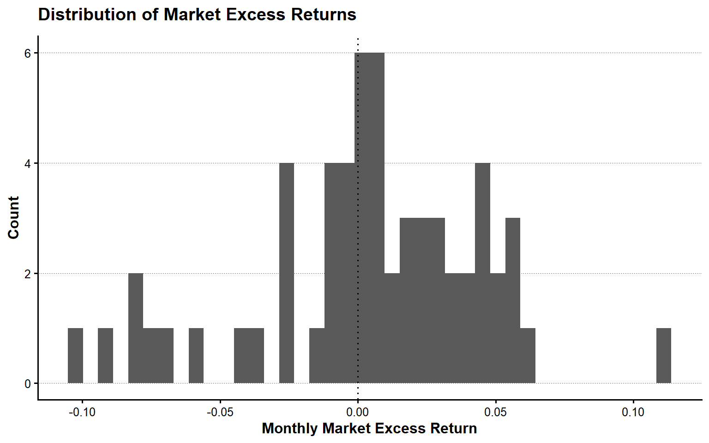
plot_cumulative_market_return <- tbl_market_returns |>
arrange(month_ID) |>
mutate(cumulative_gross_market_return = cumprod(1 + R_M)) |>
ggplot(aes(x = month_date, y = cumulative_gross_market_return)) +
geom_line(linewidth = 0.8) +
geom_hline(yintercept = 1, linetype = "dotted") +
labs(
x = NULL,
y = "Cumulative Gross Return",
title = "Value-Weighted Market Portfolio"
)
show_plot_LFL(add_lagrange_theme_LFL(plot_cumulative_market_return))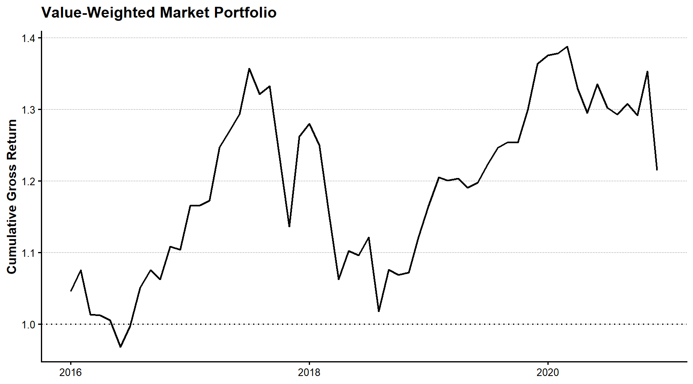
4.3.3 ポートフォリオ形成ユニバース
企業規模と簿価時価比率の両方を利用できる企業を共通の形成ユニバースとする。
tbl_formation_universe <- tbl_annual |>
filter(
is.finite(lagged_ME),
lagged_ME > 0,
is.finite(lagged_BEME),
lagged_BEME > 0
) |>
select(year, firm_ID, lagged_ME, lagged_BEME)
tbl_formation_breakpoints <- tbl_formation_universe |>
group_by(year) |>
summarise(
firms = n_distinct(firm_ID),
size_median = median(lagged_ME),
BEME_30 = quantile(lagged_BEME, probs = 0.30, names = FALSE),
BEME_70 = quantile(lagged_BEME, probs = 0.70, names = FALSE),
.groups = "drop"
)
tbl_formation <- tbl_formation_universe |>
left_join(tbl_formation_breakpoints, by = "year") |>
group_by(year) |>
mutate(
ME_rank10 = ntile(lagged_ME, 10),
BEME_rank10 = ntile(lagged_BEME, 10)
) |>
ungroup() |>
mutate(
size_group = if_else(lagged_ME <= size_median, "S", "B"),
BEME_group = case_when(
lagged_BEME <= BEME_30 ~ "L",
lagged_BEME <= BEME_70 ~ "N",
TRUE ~ "H"
),
FF_portfolio_type = factor(
paste0(size_group, BEME_group),
levels = c("SL", "SN", "SH", "BL", "BN", "BH")
)
) |>
select(
year, firm_ID, lagged_ME, lagged_BEME,
ME_rank10, BEME_rank10,
size_group, BEME_group, FF_portfolio_type
)
tbl_portfolio_membership_counts <- tbl_formation |>
count(year, FF_portfolio_type, name = "firms") |>
complete(
year,
FF_portfolio_type,
fill = list(firms = 0)
) |>
arrange(year, FF_portfolio_type)
tbl_empty_portfolios <- tbl_portfolio_membership_counts |>
filter(firms == 0)
if (nrow(tbl_empty_portfolios) > 0) {
stop("企業が割り当てられていない2×3ポートフォリオがあります。")
}
show_table_LFL(tbl_formation_breakpoints, n = Inf)
#> # A tibble: 5 × 5
#> year firms size_median BEME_30 BEME_70
#> <int> <int> <dbl> <dbl> <dbl>
#> 1 2016 1241 24564654000 0.00000076171 0.0000014304
#> 2 2017 1270 25133528500 0.00000070949 0.0000013738
#> 3 2018 1268 28268839000 0.00000061518 0.0000012038
#> 4 2019 1304 23853596500 0.00000073364 0.0000014045
#> 5 2020 1322 31878381000 0.00000057440 0.0000011304
show_table_LFL(tbl_portfolio_membership_counts, n = Inf)
#> # A tibble: 30 × 3
#> year FF_portfolio_type firms
#> <int> <fct> <int>
#> 1 2016 SL 140
#> 2 2016 SN 210
#> 3 2016 SH 271
#> 4 2016 BL 233
#> 5 2016 BN 286
#> 6 2016 BH 101
#> 7 2017 SL 141
#> 8 2017 SN 224
#> 9 2017 SH 270
#> 10 2017 BL 240
#> 11 2017 BN 284
#> 12 2017 BH 111
#> 13 2018 SL 152
#> 14 2018 SN 224
#> 15 2018 SH 258
#> 16 2018 BL 229
#> 17 2018 BN 282
#> 18 2018 BH 123
#> 19 2019 SL 167
#> 20 2019 SN 225
#> 21 2019 SH 260
#> 22 2019 BL 224
#> 23 2019 BN 297
#> 24 2019 BH 131
#> 25 2020 SL 173
#> 26 2020 SN 248
#> 27 2020 SH 240
#> 28 2020 BL 224
#> 29 2020 BN 280
#> 30 2020 BH 1574.4 単変量ポートフォリオ・ソート
4.4.1 企業規模10分位ポートフォリオ
企業規模10分位ごとに、等加重リターンと前年度末時価総額加重リターンを計算する。
tbl_size_decile_returns <- tbl_monthly |>
inner_join(
tbl_formation |>
select(year, firm_ID, lagged_ME, ME_rank10),
by = c("year", "firm_ID")
) |>
group_by(
month_ID, year, month, month_date, ME_rank10
) |>
summarise(
R_F = compute_median_safe(R_F),
R_equal = compute_mean_safe(R),
R_value = compute_weighted_mean_safe(R, lagged_ME),
firms = n_distinct(firm_ID),
valid_return_firms = sum(is.finite(R)),
.groups = "drop"
) |>
mutate(
Re_equal = R_equal - R_F,
Re_value = R_value - R_F
) |>
arrange(month_ID, ME_rank10)
tbl_size_decile_coverage <- tbl_size_decile_returns |>
group_by(month_ID) |>
summarise(
portfolios = n_distinct(ME_rank10),
.groups = "drop"
) |>
filter(portfolios != 10)
if (nrow(tbl_size_decile_coverage) > 0) {
stop("10個の企業規模ポートフォリオがそろわない月があります。")
}
tbl_size_decile_summary <- tbl_size_decile_returns |>
group_by(ME_rank10) |>
summarise(
months = n(),
mean_equal_excess_return = mean(Re_equal, na.rm = TRUE),
mean_value_excess_return = mean(Re_value, na.rm = TRUE),
value_return_volatility = sd(Re_value, na.rm = TRUE),
.groups = "drop"
) |>
arrange(ME_rank10)
show_table_LFL(tbl_size_decile_summary, n = Inf)
#> # A tibble: 10 × 5
#> ME_rank10 months mean_equal_excess_return mean_value_excess_return
#> <int> <int> <dbl> <dbl>
#> 1 1 60 0.014931 0.015119
#> 2 2 60 0.013581 0.013512
#> 3 3 60 0.015247 0.015316
#> 4 4 60 0.013073 0.012958
#> 5 5 60 0.010989 0.010910
#> 6 6 60 0.010277 0.010388
#> 7 7 60 0.0067439 0.0065837
#> 8 8 60 0.0051647 0.0054430
#> 9 9 60 0.0046434 0.0045278
#> 10 10 60 0.0037215 0.0029811
#> value_return_volatility
#> <dbl>
#> 1 0.042085
#> 2 0.040856
#> 3 0.040102
#> 4 0.041626
#> 5 0.041165
#> 6 0.040414
#> 7 0.041338
#> 8 0.041428
#> 9 0.044503
#> 10 0.042314plot_size_decile <- tbl_size_decile_summary |>
select(
ME_rank10,
equal_weighted = mean_equal_excess_return,
value_weighted = mean_value_excess_return
) |>
pivot_longer(
cols = c(equal_weighted, value_weighted),
names_to = "weighting",
values_to = "mean_excess_return"
) |>
mutate(ME_rank10 = factor(ME_rank10, levels = 1:10)) |>
ggplot(
aes(
x = ME_rank10,
y = mean_excess_return,
fill = weighting
)
) +
geom_col(position = "dodge") +
geom_hline(yintercept = 0, linetype = "dotted") +
scale_y_continuous(labels = scales::label_percent()) +
labs(
x = "Size Decile",
y = "Mean Monthly Excess Return",
fill = "Weighting",
title = "Size-Sorted Portfolio Returns"
)
show_plot_LFL(add_lagrange_theme_LFL(plot_size_decile))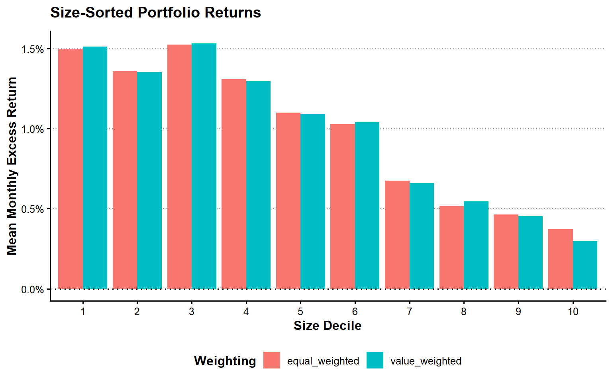
4.4.2 簿価時価比率10分位ポートフォリオ
tbl_beme_decile_returns <- tbl_monthly |>
inner_join(
tbl_formation |>
select(year, firm_ID, lagged_ME, BEME_rank10),
by = c("year", "firm_ID")
) |>
group_by(
month_ID, year, month, month_date, BEME_rank10
) |>
summarise(
R_F = compute_median_safe(R_F),
R_equal = compute_mean_safe(R),
R_value = compute_weighted_mean_safe(R, lagged_ME),
firms = n_distinct(firm_ID),
valid_return_firms = sum(is.finite(R)),
.groups = "drop"
) |>
mutate(
Re_equal = R_equal - R_F,
Re_value = R_value - R_F
) |>
arrange(month_ID, BEME_rank10)
tbl_beme_decile_summary <- tbl_beme_decile_returns |>
group_by(BEME_rank10) |>
summarise(
months = n(),
mean_equal_excess_return = mean(Re_equal, na.rm = TRUE),
mean_value_excess_return = mean(Re_value, na.rm = TRUE),
value_return_volatility = sd(Re_value, na.rm = TRUE),
.groups = "drop"
) |>
arrange(BEME_rank10)
show_table_LFL(tbl_beme_decile_summary, n = Inf)
#> # A tibble: 10 × 5
#> BEME_rank10 months mean_equal_excess_return mean_value_excess_return
#> <int> <int> <dbl> <dbl>
#> 1 1 60 0.0069080 -0.0012722
#> 2 2 60 0.0057059 0.0024925
#> 3 3 60 0.0043601 0.0021706
#> 4 4 60 0.0090970 0.0034693
#> 5 5 60 0.0099654 0.0085384
#> 6 6 60 0.010433 0.0055909
#> 7 7 60 0.0086709 0.0085607
#> 8 8 60 0.012979 0.0088343
#> 9 9 60 0.016017 0.014657
#> 10 10 60 0.014389 0.0097273
#> value_return_volatility
#> <dbl>
#> 1 0.052048
#> 2 0.039802
#> 3 0.045255
#> 4 0.045192
#> 5 0.047651
#> 6 0.042627
#> 7 0.044756
#> 8 0.044844
#> 9 0.049615
#> 10 0.043590plot_beme_decile <- tbl_beme_decile_summary |>
select(
BEME_rank10,
equal_weighted = mean_equal_excess_return,
value_weighted = mean_value_excess_return
) |>
pivot_longer(
cols = c(equal_weighted, value_weighted),
names_to = "weighting",
values_to = "mean_excess_return"
) |>
mutate(BEME_rank10 = factor(BEME_rank10, levels = 1:10)) |>
ggplot(
aes(
x = BEME_rank10,
y = mean_excess_return,
fill = weighting
)
) +
geom_col(position = "dodge") +
geom_hline(yintercept = 0, linetype = "dotted") +
scale_y_continuous(labels = scales::label_percent()) +
labs(
x = "Book-to-Market Decile",
y = "Mean Monthly Excess Return",
fill = "Weighting",
title = "Book-to-Market-Sorted Portfolio Returns"
)
show_plot_LFL(add_lagrange_theme_LFL(plot_beme_decile))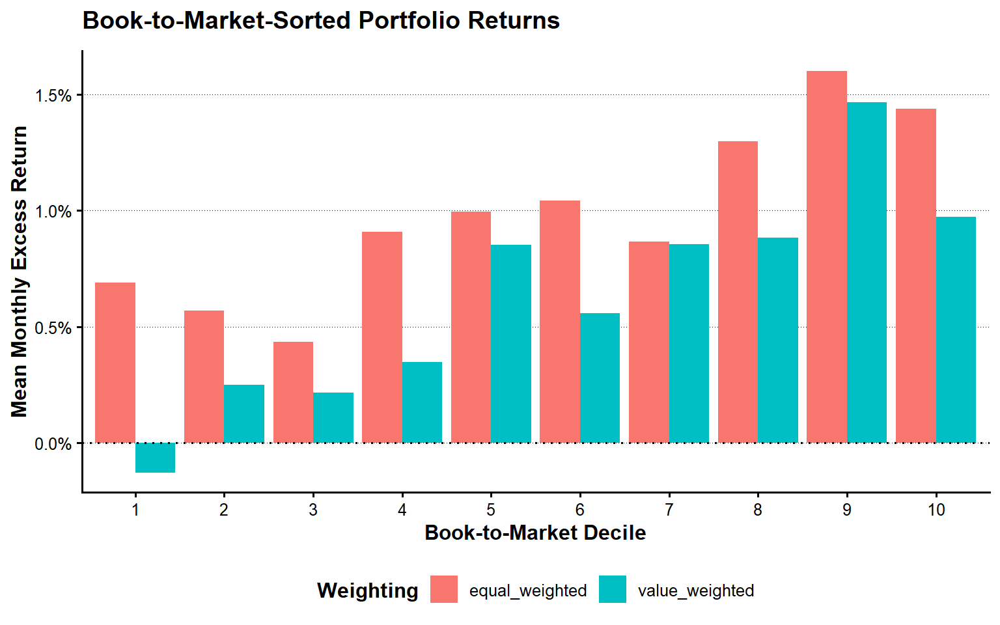
4.5 CAPM
4.5.1 モデルの推定
CAPMでは、ポートフォリオ \(p\) の超過リターンを市場超過リターンで説明する。
\[ R^e_{p,t} = \alpha_p+\beta_pR^e_{M,t}+\varepsilon_{p,t} \]
tbl_capm_data <- tbl_size_decile_returns |>
select(month_ID, ME_rank10, Re = Re_value) |>
inner_join(
tbl_market_returns |>
select(month_ID, R_Me),
by = "month_ID"
) |>
filter(is.finite(Re), is.finite(R_Me)) |>
arrange(ME_rank10, month_ID)
tbl_capm_models <- tbl_capm_data |>
group_by(ME_rank10) |>
nest() |>
mutate(
model = map(data, \(data) lm(Re ~ R_Me, data = data)),
coefficients = map(model, broom::tidy),
fit = map(model, broom::glance)
)
tbl_capm_results <- tbl_capm_models |>
select(ME_rank10, coefficients) |>
unnest(coefficients) |>
mutate(significance = compute_significance_stars(p.value)) |>
arrange(ME_rank10, term)
tbl_capm_fit <- tbl_capm_models |>
select(ME_rank10, fit) |>
unnest(fit) |>
select(
ME_rank10, r.squared, adj.r.squared,
sigma, statistic, p.value, nobs
) |>
arrange(ME_rank10)
tbl_capm_alpha <- tbl_capm_results |>
filter(term == "(Intercept)") |>
transmute(
ME_rank10,
tbl_capm_alpha = estimate,
standard_error = std.error,
statistic,
p_value = p.value,
significance
)
show_table_LFL(tbl_capm_results, n = Inf)
#> # A tibble: 20 × 7
#> # Groups: ME_rank10 [10]
#> ME_rank10 term estimate std.error statistic p.value
#> <int> <chr> <dbl> <dbl> <dbl> <dbl>
#> 1 1 (Intercept) 0.012412 0.0041175 3.0144 3.8151e- 3
#> 2 1 R_Me 0.67325 0.099584 6.7607 7.3884e- 9
#> 3 2 (Intercept) 0.010641 0.0036808 2.8910 5.3962e- 3
#> 4 2 R_Me 0.71390 0.089021 8.0195 5.6813e-11
#> 5 3 (Intercept) 0.012195 0.0031256 3.9016 2.5116e- 4
#> 6 3 R_Me 0.77614 0.075595 10.267 1.1583e-14
#> 7 4 (Intercept) 0.0095370 0.0028845 3.3062 1.6262e- 3
#> 8 4 R_Me 0.85081 0.069764 12.196 1.2013e-17
#> 9 5 (Intercept) 0.0073101 0.0023212 3.1493 2.5865e- 3
#> 10 5 R_Me 0.89511 0.056138 15.945 7.2596e-23
#> 11 6 (Intercept) 0.0067526 0.0019672 3.4325 1.1093e- 3
#> 12 6 R_Me 0.90394 0.047579 18.999 1.3994e-26
#> 13 7 (Intercept) 0.0027911 0.0017412 1.6030 1.1437e- 1
#> 14 7 R_Me 0.94309 0.042112 22.395 3.1166e-30
#> 15 8 (Intercept) 0.0016328 0.0017077 0.95613 3.4298e- 1
#> 16 8 R_Me 0.94747 0.041302 22.940 8.8761e-31
#> 17 9 (Intercept) 0.00035036 0.0014465 0.24221 8.0947e- 1
#> 18 9 R_Me 1.0388 0.034985 29.693 9.0177e-37
#> 19 10 (Intercept) -0.0010957 0.00059445 -1.8432 7.0415e- 2
#> 20 10 R_Me 1.0138 0.014377 70.512 6.5289e-58
#> significance
#> <chr>
#> 1 "***"
#> 2 "***"
#> 3 "***"
#> 4 "***"
#> 5 "***"
#> 6 "***"
#> 7 "***"
#> 8 "***"
#> 9 "***"
#> 10 "***"
#> 11 "***"
#> 12 "***"
#> 13 ""
#> 14 "***"
#> 15 ""
#> 16 "***"
#> 17 ""
#> 18 "***"
#> 19 "*"
#> 20 "***"
show_table_LFL(tbl_capm_fit, n = Inf)
#> # A tibble: 10 × 7
#> # Groups: ME_rank10 [10]
#> ME_rank10 r.squared adj.r.squared sigma statistic p.value nobs
#> <int> <dbl> <dbl> <dbl> <dbl> <dbl> <int>
#> 1 1 0.44073 0.43109 0.031743 45.706 7.3884e- 9 60
#> 2 2 0.52580 0.51763 0.028376 64.312 5.6813e-11 60
#> 3 3 0.64507 0.63895 0.024096 105.41 1.1583e-14 60
#> 4 4 0.71944 0.71461 0.022238 148.73 1.2013e-17 60
#> 5 5 0.81424 0.81104 0.017894 254.23 7.2596e-23 60
#> 6 6 0.86156 0.85918 0.015166 360.96 1.3994e-26 60
#> 7 7 0.89634 0.89456 0.013423 501.54 3.1166e-30 60
#> 8 8 0.90073 0.89902 0.013165 526.25 8.8761e-31 60
#> 9 9 0.93827 0.93721 0.011152 881.65 9.0177e-37 60
#> 10 10 0.98847 0.98827 0.0045827 4972.0 6.5289e-58 60plot_capm_alpha <- tbl_capm_alpha |>
mutate(ME_rank10 = factor(ME_rank10, levels = 1:10)) |>
ggplot(aes(x = ME_rank10, y = tbl_capm_alpha)) +
geom_col() +
geom_hline(yintercept = 0, linetype = "dotted") +
scale_y_continuous(labels = scales::label_percent()) +
labs(
x = "Size Decile",
y = "CAPM Alpha",
title = "CAPM Alphas of Size Portfolios"
)
show_plot_LFL(add_lagrange_theme_LFL(plot_capm_alpha))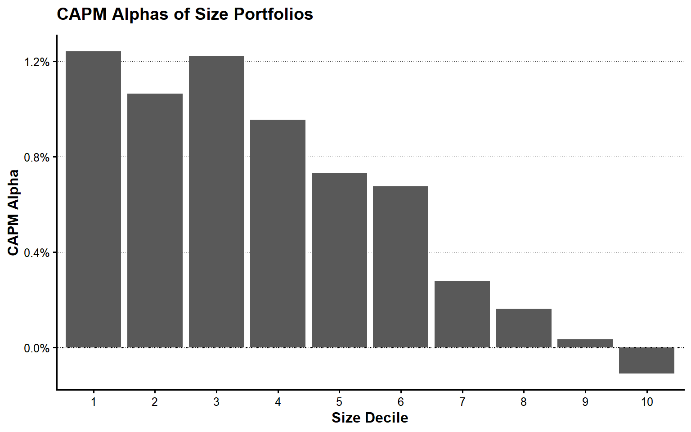
4.5.2 証券市場線
tbl_capm_beta <- tbl_capm_results |>
filter(term == "R_Me") |>
transmute(
ME_rank10,
tbl_capm_beta = estimate,
beta_p_value = p.value
)
tbl_security_market_line <- tbl_size_decile_summary |>
select(
ME_rank10,
mean_excess_return = mean_value_excess_return
) |>
left_join(tbl_capm_beta, by = "ME_rank10")
vec_mean_market_excess_return <- mean(
tbl_market_returns$R_Me,
na.rm = TRUE
)
plot_security_market_line <- tbl_security_market_line |>
ggplot(
aes(
x = tbl_capm_beta,
y = mean_excess_return
)
) +
geom_point() +
geom_text(aes(label = ME_rank10), nudge_y = 0.0005) +
geom_abline(
intercept = 0,
slope = vec_mean_market_excess_return,
linetype = "dashed"
) +
scale_y_continuous(labels = scales::label_percent()) +
labs(
x = "Market Beta",
y = "Mean Monthly Excess Return",
title = "Security Market Line"
)
show_plot_LFL(add_lagrange_theme_LFL(plot_security_market_line))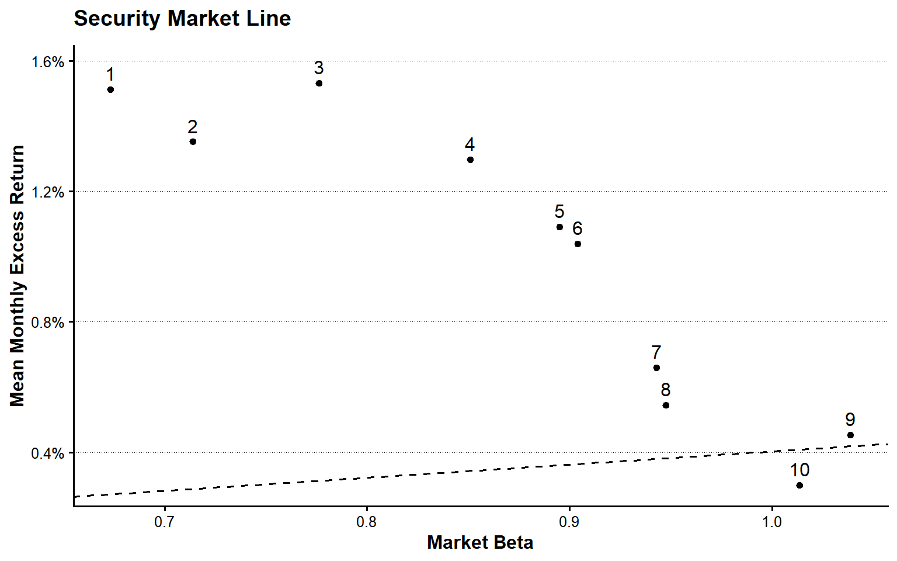
4.6 2×3ポートフォリオとSMB・HML
4.6.1 Size–BE/MEポートフォリオ
企業規模をSmallとBigの2群、簿価時価比率をLow、Neutral、Highの3群に分ける。
| ポートフォリオ | 企業規模 | 簿価時価比率 |
|---|---|---|
| SL | Small | Low |
| SN | Small | Neutral |
| SH | Small | High |
| BL | Big | Low |
| BN | Big | Neutral |
| BH | Big | High |
tbl_ff_portfolio_returns <- tbl_monthly |>
inner_join(
tbl_formation |>
select(
year, firm_ID, lagged_ME,
size_group, BEME_group, FF_portfolio_type
),
by = c("year", "firm_ID")
) |>
filter(!is.na(FF_portfolio_type)) |>
group_by(
month_ID, year, month, month_date,
FF_portfolio_type, size_group, BEME_group
) |>
summarise(
R_F = compute_median_safe(R_F),
R = compute_weighted_mean_safe(R, lagged_ME),
firms = n_distinct(firm_ID),
valid_return_firms = sum(is.finite(R)),
.groups = "drop"
) |>
mutate(Re = R - R_F) |>
arrange(month_ID, FF_portfolio_type)
tbl_ff_portfolio_coverage <- tbl_ff_portfolio_returns |>
group_by(month_ID) |>
summarise(
portfolios = n_distinct(FF_portfolio_type),
.groups = "drop"
) |>
filter(portfolios != 6)
if (nrow(tbl_ff_portfolio_coverage) > 0) {
stop("6個のSize--BE/MEポートフォリオがそろわない月があります。")
}
tbl_ff_portfolio_summary <- tbl_ff_portfolio_returns |>
group_by(
FF_portfolio_type,
size_group,
BEME_group
) |>
summarise(
months = n(),
mean_return = mean(R),
mean_excess_return = mean(Re),
volatility = sd(R),
.groups = "drop"
) |>
arrange(FF_portfolio_type)
show_table_LFL(tbl_ff_portfolio_summary, n = Inf)
#> # A tibble: 6 × 7
#> FF_portfolio_type size_group BEME_group months mean_return mean_excess_return
#> <fct> <chr> <chr> <int> <dbl> <dbl>
#> 1 SL S L 60 0.010056 0.0099773
#> 2 SN S N 60 0.013474 0.013395
#> 3 SH S H 60 0.014002 0.013923
#> 4 BL B L 60 0.00081235 0.00073351
#> 5 BN B N 60 0.0063080 0.0062291
#> 6 BH B H 60 0.010766 0.010687
#> volatility
#> <dbl>
#> 1 0.044267
#> 2 0.041252
#> 3 0.040505
#> 4 0.043049
#> 5 0.042621
#> 6 0.046846plot_ff_portfolio <- tbl_ff_portfolio_summary |>
ggplot(
aes(
x = BEME_group,
y = mean_excess_return,
fill = size_group
)
) +
geom_col(position = "dodge") +
geom_text(
aes(label = FF_portfolio_type, group = size_group),
position = position_dodge(width = 0.9),
vjust = -0.5
) +
geom_hline(yintercept = 0, linetype = "dotted") +
scale_y_continuous(
labels = scales::label_percent(),
expand = expansion(mult = c(0.05, 0.15))
) +
labs(
x = "Book-to-Market Group",
y = "Mean Monthly Excess Return",
fill = "Size Group",
title = "Six Size--Book-to-Market Portfolios"
)
show_plot_LFL(add_lagrange_theme_LFL(plot_ff_portfolio))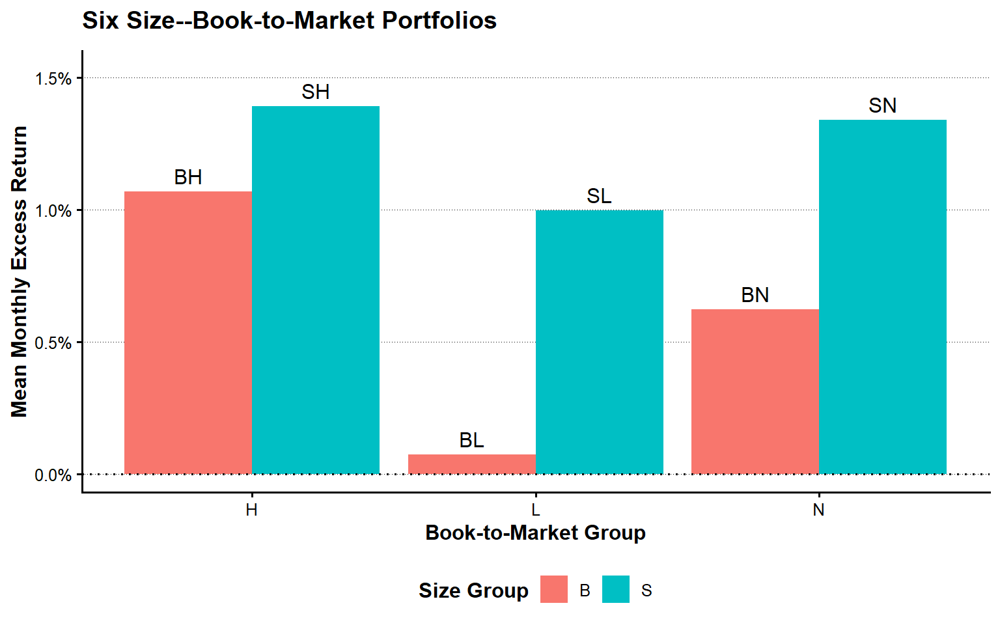
plot_ff_cumulative <- tbl_ff_portfolio_returns |>
group_by(FF_portfolio_type) |>
arrange(month_ID, .by_group = TRUE) |>
mutate(cumulative_gross_return = cumprod(1 + R)) |>
ungroup() |>
ggplot(
aes(
x = month_date,
y = cumulative_gross_return,
linetype = FF_portfolio_type
)
) +
geom_line(linewidth = 0.7) +
geom_hline(yintercept = 1, linetype = "dotted") +
labs(
x = NULL,
y = "Cumulative Gross Return",
linetype = "Portfolio",
title = "Cumulative Returns of Six Portfolios"
)
show_plot_LFL(add_lagrange_theme_LFL(plot_ff_cumulative))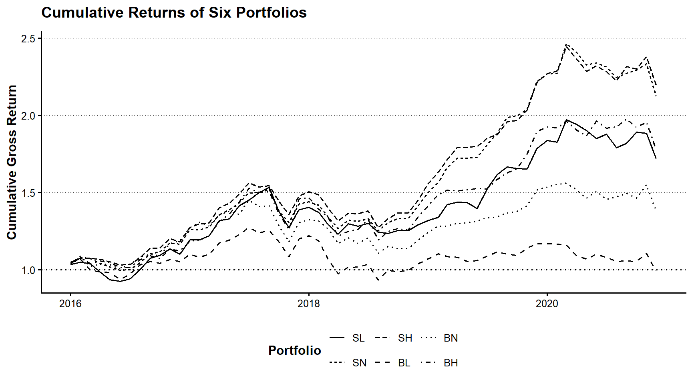
4.6.2 SMBとHML
SMBはSmallポートフォリオの平均リターンからBigポートフォリオの平均リターンを引いて計算する。
\[ SMB_t = \frac{SL_t+SN_t+SH_t}{3} - \frac{BL_t+BN_t+BH_t}{3} \]
HMLはHighポートフォリオの平均リターンからLowポートフォリオの平均リターンを引いて計算する。
\[ HML_t = \frac{SH_t+BH_t}{2} - \frac{SL_t+BL_t}{2} \]
tbl_ff_portfolio_wide <- tbl_ff_portfolio_returns |>
select(
month_ID, year, month, month_date,
FF_portfolio_type, R
) |>
pivot_wider(
names_from = FF_portfolio_type,
values_from = R
) |>
arrange(month_ID)
tbl_smb_hml <- tbl_ff_portfolio_wide |>
mutate(
SMB = (SL + SN + SH) / 3 - (BL + BN + BH) / 3,
HML = (SH + BH) / 2 - (SL + BL) / 2
) |>
select(
month_ID, year, month, month_date,
SL, SN, SH, BL, BN, BH, SMB, HML
)
tbl_factor <- tbl_market_returns |>
select(
month_ID, year, month, month_date,
R_F, R_M, R_Me,
market_return_coverage = return_coverage
) |>
inner_join(
tbl_smb_hml,
by = c("month_ID", "year", "month", "month_date")
) |>
arrange(month_ID)
tbl_invalid_factor_rows <- tbl_factor |>
filter(
!if_all(
c(R_F, R_M, R_Me, SMB, HML),
is.finite
)
)
if (nrow(tbl_invalid_factor_rows) > 0) {
stop("ファクター・データに欠損値または非有限値があります。")
}
show_table_LFL(tbl_factor)
#> # A tibble: 60 × 16
#> month_ID year month month_date R_F R_M R_Me
#> <int> <int> <int> <date> <dbl> <dbl> <dbl>
#> 1 13 2016 1 2016-01-01 0.000082029 0.045835 0.045753
#> 2 14 2016 2 2016-02-01 0.000075959 0.028423 0.028347
#> 3 15 2016 3 2016-03-01 0.000075959 -0.057976 -0.058052
#> 4 16 2016 4 2016-04-01 0.000082029 -0.0010718 -0.0011539
#> 5 17 2016 5 2016-05-01 0.000082029 -0.0064160 -0.0064980
#> 6 18 2016 6 2016-06-01 0.000082029 -0.037075 -0.037157
#> 7 19 2016 7 2016-07-01 0.000082029 0.029853 0.029771
#> 8 20 2016 8 2016-08-01 0.000082029 0.053757 0.053675
#> 9 21 2016 9 2016-09-01 0.000082029 0.023650 0.023568
#> 10 22 2016 10 2016-10-01 0.000075959 -0.012053 -0.012129
#> market_return_coverage SL SN SH BL BN
#> <dbl> <dbl> <dbl> <dbl> <dbl> <dbl>
#> 1 1 0.034424 0.040738 0.049300 0.048792 0.043035
#> 2 1 0.016158 0.039043 0.026503 0.018793 0.043267
#> 3 1 -0.011443 -0.0075343 -0.00082137 -0.065067 -0.058172
#> 4 1 -0.050894 -0.029672 -0.0084329 -0.0096066 0.013125
#> 5 1 -0.050419 -0.020829 -0.013882 -0.0064587 -0.0031242
#> 6 1 -0.010094 -0.021100 -0.019579 -0.045272 -0.025807
#> 7 1 0.016136 0.0030885 0.0024072 0.037354 0.027623
#> 8 1 0.061823 0.043624 0.040794 0.060068 0.044383
#> 9 1 0.076890 0.056521 0.059240 0.023654 0.018573
#> 10 1 0.014770 0.011308 0.0017272 -0.013614 -0.010340
#> BH SMB HML
#> <dbl> <dbl> <dbl>
#> 1 0.037868 -0.0017441 0.0019763
#> 2 0.039974 -0.0067772 0.015763
#> 3 -0.035989 0.046477 0.019850
#> 4 0.016129 -0.036215 0.034098
#> 5 -0.0090124 -0.022178 0.016992
#> 6 -0.030949 0.017085 0.0024194
#> 7 0.0011262 -0.014824 -0.024978
#> 8 0.048092 -0.0021008 -0.016503
#> 9 0.023533 0.042297 -0.0088858
#> 10 -0.016441 0.022733 -0.0079348
#> # ℹ 50 more rows4.6.3 ファクターの要約統計量
vec_factor_names <- c("R_Me", "SMB", "HML")
tbl_factor_summary <- vec_factor_names |>
map_dfr(
\(factor_name) {
values <- tbl_factor[[factor_name]]
finite_values <- values[is.finite(values)]
tibble(
factor = factor_name,
observations = length(finite_values),
mean = mean(finite_values),
standard_deviation = sd(finite_values),
minimum = min(finite_values),
median = median(finite_values),
maximum = max(finite_values),
t_value = mean(finite_values) /
(sd(finite_values) / sqrt(length(finite_values)))
)
}
)
tbl_factor_correlation <- tbl_factor |>
select(R_Me, SMB, HML) |>
cor(use = "complete.obs")
show_table_LFL(tbl_factor_summary, n = Inf)
#> # A tibble: 3 × 8
#> factor observations mean standard_deviation minimum median maximum
#> <chr> <int> <dbl> <dbl> <dbl> <dbl> <dbl>
#> 1 R_Me 60 0.0040215 0.041498 -0.10252 0.0060055 0.11097
#> 2 SMB 60 0.0065488 0.022857 -0.038447 0.0055499 0.069390
#> 3 HML 60 0.0069496 0.018058 -0.043572 0.0089560 0.035442
#> t_value
#> <dbl>
#> 1 0.75064
#> 2 2.2193
#> 3 2.9811
tbl_factor_correlation
#> R_Me SMB HML
#> R_Me 1.0000000 -0.3431883 0.1702499
#> SMB -0.3431883 1.0000000 -0.3806883
#> HML 0.1702499 -0.3806883 1.0000000plot_factor_time_series <- tbl_factor |>
select(month_date, R_Me, SMB, HML) |>
pivot_longer(
cols = c(R_Me, SMB, HML),
names_to = "factor",
values_to = "return"
) |>
ggplot(aes(x = month_date, y = return)) +
geom_line(linewidth = 0.6) +
geom_hline(yintercept = 0, linetype = "dotted") +
facet_wrap(
vars(factor),
ncol = 1,
scales = "free_y"
) +
scale_y_continuous(labels = scales::label_percent()) +
labs(
x = NULL,
y = "Monthly Return",
title = "Market, SMB and HML Factors"
)
show_plot_LFL(add_lagrange_theme_LFL(plot_factor_time_series))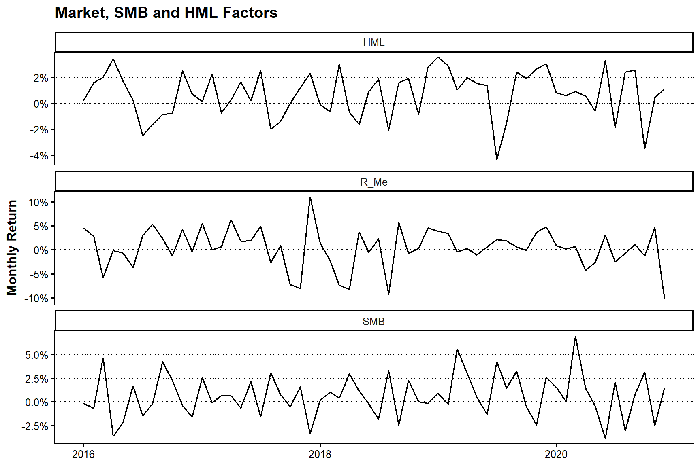
4.7 FF3モデルとCAPMの比較
4.7.1 FF3モデルの推定
Fama–Frenchの3ファクター・モデルは、ポートフォリオの超過リターンを市場、SMB、HMLで説明する。
\[ R^e_{p,t} = \alpha_p +\beta_{M,p}R^e_{M,t} +\beta_{SMB,p}SMB_t +\beta_{HML,p}HML_t +\varepsilon_{p,t} \]
tbl_ff3_data <- tbl_size_decile_returns |>
select(month_ID, ME_rank10, Re = Re_value) |>
inner_join(
tbl_factor |>
select(month_ID, R_Me, SMB, HML),
by = "month_ID"
) |>
filter(
if_all(
c(Re, R_Me, SMB, HML),
is.finite
)
) |>
arrange(ME_rank10, month_ID)
tbl_ff3_models <- tbl_ff3_data |>
group_by(ME_rank10) |>
nest() |>
mutate(
model = map(
data,
\(data) lm(Re ~ R_Me + SMB + HML, data = data)
),
coefficients = map(model, broom::tidy),
fit = map(model, broom::glance)
)
tbl_ff3_results <- tbl_ff3_models |>
select(ME_rank10, coefficients) |>
unnest(coefficients) |>
mutate(significance = compute_significance_stars(p.value)) |>
arrange(ME_rank10, term)
tbl_ff3_fit <- tbl_ff3_models |>
select(ME_rank10, fit) |>
unnest(fit) |>
select(
ME_rank10, r.squared, adj.r.squared,
sigma, statistic, p.value, nobs
) |>
arrange(ME_rank10)
tbl_ff3_alpha <- tbl_ff3_results |>
filter(term == "(Intercept)") |>
transmute(
ME_rank10,
tbl_ff3_alpha = estimate,
standard_error = std.error,
statistic,
p_value = p.value,
significance
)
show_table_LFL(tbl_ff3_results, n = Inf)
#> # A tibble: 40 × 7
#> # Groups: ME_rank10 [10]
#> ME_rank10 term estimate std.error statistic p.value
#> <int> <chr> <dbl> <dbl> <dbl> <dbl>
#> 1 1 (Intercept) 0.0022160 0.0019246 1.1514 2.5446e- 1
#> 2 1 HML 0.037314 0.098061 0.38052 7.0500e- 1
#> 3 1 R_Me 0.92776 0.042009 22.085 2.5525e-29
#> 4 1 SMB 1.3610 0.081276 16.746 1.8226e-23
#> 5 2 (Intercept) 0.0012670 0.0015741 0.80490 4.2428e- 1
#> 6 2 HML 0.048745 0.080200 0.60779 5.4578e- 1
#> 7 2 R_Me 0.94434 0.034357 27.486 3.3917e-34
#> 8 2 SMB 1.2382 0.066472 18.627 1.1450e-25
#> 9 3 (Intercept) 0.0024754 0.0014256 1.7364 8.7992e- 2
#> 10 3 HML 0.26825 0.072634 3.6931 5.0419e- 4
#> 11 3 R_Me 0.96149 0.031116 30.900 7.1830e-37
#> 12 3 SMB 1.0857 0.060201 18.034 5.4337e-25
#> 13 4 (Intercept) -0.00088852 0.00085856 -1.0349 3.0517e- 1
#> 14 4 HML 0.40182 0.043744 9.1858 9.0449e-13
#> 15 4 R_Me 1.0215 0.018740 54.513 3.2219e-50
#> 16 4 SMB 1.0607 0.036256 29.256 1.2872e-35
#> 17 5 (Intercept) -0.00088220 0.00091786 -0.96115 3.4061e- 1
#> 18 5 HML 0.31739 0.046765 6.7869 7.7807e- 9
#> 19 5 R_Me 1.0289 0.020034 51.357 8.5258e-49
#> 20 5 SMB 0.83200 0.038760 21.466 1.0638e-28
#> 21 6 (Intercept) 0.0012087 0.0013152 0.91901 3.6203e- 1
#> 22 6 HML 0.15817 0.067009 2.3605 2.1759e- 2
#> 23 6 R_Me 1.0084 0.028706 35.128 7.7326e-40
#> 24 6 SMB 0.61456 0.055539 11.065 1.0274e-15
#> 25 7 (Intercept) -0.0019158 0.0011588 -1.6532 1.0388e- 1
#> 26 7 HML 0.11287 0.059041 1.9117 6.1037e- 2
#> 27 7 R_Me 1.0370 0.025293 41.001 1.8493e-43
#> 28 7 SMB 0.54127 0.048935 11.061 1.0435e-15
#> 29 8 (Intercept) 0.0011876 0.0014388 0.82540 4.1264e- 1
#> 30 8 HML -0.26686 0.073308 -3.6403 5.9543e- 4
#> 31 8 R_Me 1.0247 0.031405 32.627 3.9979e-38
#> 32 8 SMB 0.30377 0.060760 4.9995 5.9999e- 6
#> 33 9 (Intercept) -0.0010787 0.0015851 -0.68056 4.9895e- 1
#> 34 9 HML -0.013149 0.080760 -0.16281 8.7125e- 1
#> 35 9 R_Me 1.0790 0.034597 31.187 4.4005e-37
#> 36 9 SMB 0.20749 0.066936 3.0999 3.0278e- 3
#> 37 10 (Intercept) 0.00017429 0.00042384 0.41123 6.8247e- 1
#> 38 10 HML -0.0028300 0.021595 -0.13105 8.9620e- 1
#> 39 10 R_Me 0.98160 0.0092510 106.11 2.9778e-66
#> 40 10 SMB -0.17118 0.017898 -9.5641 2.2416e-13
#> significance
#> <chr>
#> 1 ""
#> 2 ""
#> 3 "***"
#> 4 "***"
#> 5 ""
#> 6 ""
#> 7 "***"
#> 8 "***"
#> 9 "*"
#> 10 "***"
#> 11 "***"
#> 12 "***"
#> 13 ""
#> 14 "***"
#> 15 "***"
#> 16 "***"
#> 17 ""
#> 18 "***"
#> 19 "***"
#> 20 "***"
#> 21 ""
#> 22 "**"
#> 23 "***"
#> 24 "***"
#> 25 ""
#> 26 "*"
#> 27 "***"
#> 28 "***"
#> 29 ""
#> 30 "***"
#> 31 "***"
#> 32 "***"
#> 33 ""
#> 34 ""
#> 35 "***"
#> 36 "***"
#> 37 ""
#> 38 ""
#> 39 "***"
#> 40 "***"
show_table_LFL(tbl_ff3_fit, n = Inf)
#> # A tibble: 10 × 7
#> # Groups: ME_rank10 [10]
#> ME_rank10 r.squared adj.r.squared sigma statistic p.value nobs
#> <int> <dbl> <dbl> <dbl> <dbl> <dbl> <int>
#> 1 1 0.91540 0.91087 0.012564 201.99 5.3609e-30 60
#> 2 2 0.93996 0.93674 0.010276 292.24 3.6748e-34 60
#> 3 3 0.94888 0.94615 0.0093063 346.51 4.0778e-36 60
#> 4 4 0.98279 0.98187 0.0056047 1066.2 2.3878e-49 60
#> 5 5 0.97989 0.97881 0.0059918 909.61 1.8726e-47 60
#> 6 6 0.95716 0.95487 0.0085857 417.09 2.9086e-38 60
#> 7 7 0.96821 0.96651 0.0075647 568.60 6.8782e-42 60
#> 8 8 0.95121 0.94860 0.0093927 363.94 1.1072e-36 60
#> 9 9 0.94869 0.94594 0.010347 345.12 4.5371e-36 60
#> 10 10 0.99594 0.99572 0.0027668 4581.1 6.5209e-67 60plot_ff3_alpha <- tbl_ff3_alpha |>
mutate(ME_rank10 = factor(ME_rank10, levels = 1:10)) |>
ggplot(aes(x = ME_rank10, y = tbl_ff3_alpha)) +
geom_col() +
geom_hline(yintercept = 0, linetype = "dotted") +
scale_y_continuous(labels = scales::label_percent()) +
labs(
x = "Size Decile",
y = "FF3 Alpha",
title = "FF3 Alphas of Size Portfolios"
)
show_plot_LFL(add_lagrange_theme_LFL(plot_ff3_alpha))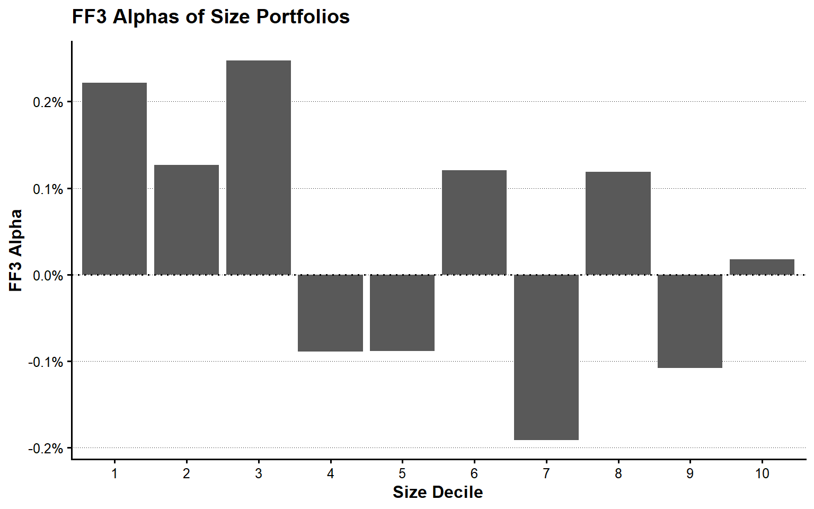
4.7.2 アルファとモデル適合度の比較
tbl_model_alpha_comparison <- tbl_capm_alpha |>
select(ME_rank10, tbl_capm_alpha) |>
left_join(
tbl_ff3_alpha |>
select(ME_rank10, tbl_ff3_alpha),
by = "ME_rank10"
) |>
pivot_longer(
cols = c(tbl_capm_alpha, tbl_ff3_alpha),
names_to = "model",
values_to = "alpha"
)
tbl_model_fit_comparison <- tbl_capm_fit |>
select(
ME_rank10,
CAPM_adjusted_R2 = adj.r.squared
) |>
left_join(
tbl_ff3_fit |>
select(
ME_rank10,
FF3_adjusted_R2 = adj.r.squared
),
by = "ME_rank10"
)
show_table_LFL(tbl_model_alpha_comparison, n = Inf)
#> # A tibble: 20 × 3
#> # Groups: ME_rank10 [10]
#> ME_rank10 model alpha
#> <int> <chr> <dbl>
#> 1 1 tbl_capm_alpha 0.012412
#> 2 1 tbl_ff3_alpha 0.0022160
#> 3 2 tbl_capm_alpha 0.010641
#> 4 2 tbl_ff3_alpha 0.0012670
#> 5 3 tbl_capm_alpha 0.012195
#> 6 3 tbl_ff3_alpha 0.0024754
#> 7 4 tbl_capm_alpha 0.0095370
#> 8 4 tbl_ff3_alpha -0.00088852
#> 9 5 tbl_capm_alpha 0.0073101
#> 10 5 tbl_ff3_alpha -0.00088220
#> 11 6 tbl_capm_alpha 0.0067526
#> 12 6 tbl_ff3_alpha 0.0012087
#> 13 7 tbl_capm_alpha 0.0027911
#> 14 7 tbl_ff3_alpha -0.0019158
#> 15 8 tbl_capm_alpha 0.0016328
#> 16 8 tbl_ff3_alpha 0.0011876
#> 17 9 tbl_capm_alpha 0.00035036
#> 18 9 tbl_ff3_alpha -0.0010787
#> 19 10 tbl_capm_alpha -0.0010957
#> 20 10 tbl_ff3_alpha 0.00017429
show_table_LFL(tbl_model_fit_comparison, n = Inf)
#> # A tibble: 10 × 3
#> # Groups: ME_rank10 [10]
#> ME_rank10 CAPM_adjusted_R2 FF3_adjusted_R2
#> <int> <dbl> <dbl>
#> 1 1 0.43109 0.91087
#> 2 2 0.51763 0.93674
#> 3 3 0.63895 0.94615
#> 4 4 0.71461 0.98187
#> 5 5 0.81104 0.97881
#> 6 6 0.85918 0.95487
#> 7 7 0.89456 0.96651
#> 8 8 0.89902 0.94860
#> 9 9 0.93721 0.94594
#> 10 10 0.98827 0.99572plot_model_alpha <- tbl_model_alpha_comparison |>
mutate(ME_rank10 = factor(ME_rank10, levels = 1:10)) |>
ggplot(
aes(
x = ME_rank10,
y = alpha,
fill = model
)
) +
geom_col(position = "dodge") +
geom_hline(yintercept = 0, linetype = "dotted") +
scale_y_continuous(labels = scales::label_percent()) +
labs(
x = "Size Decile",
y = "Monthly Alpha",
fill = "Model",
title = "CAPM and FF3 Alphas"
)
show_plot_LFL(add_lagrange_theme_LFL(plot_model_alpha))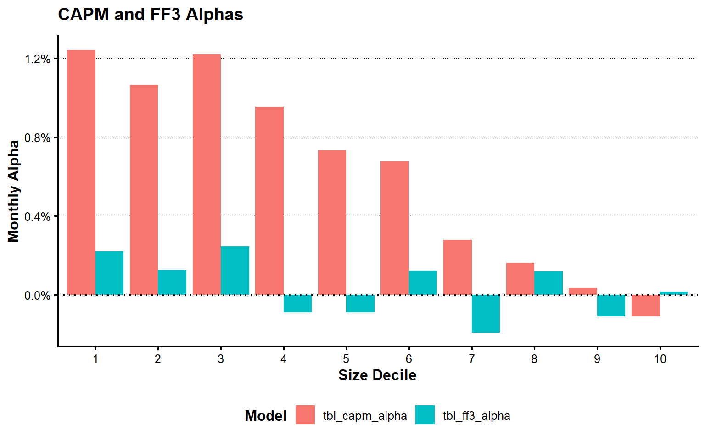
plot_model_fit <- tbl_model_fit_comparison |>
pivot_longer(
cols = c(CAPM_adjusted_R2, FF3_adjusted_R2),
names_to = "model",
values_to = "adjusted_R2"
) |>
mutate(ME_rank10 = factor(ME_rank10, levels = 1:10)) |>
ggplot(
aes(
x = ME_rank10,
y = adjusted_R2,
fill = model
)
) +
geom_col(position = "dodge") +
labs(
x = "Size Decile",
y = "Adjusted R-squared",
fill = "Model",
title = "Model Fit: CAPM and FF3"
)
show_plot_LFL(add_lagrange_theme_LFL(plot_model_fit))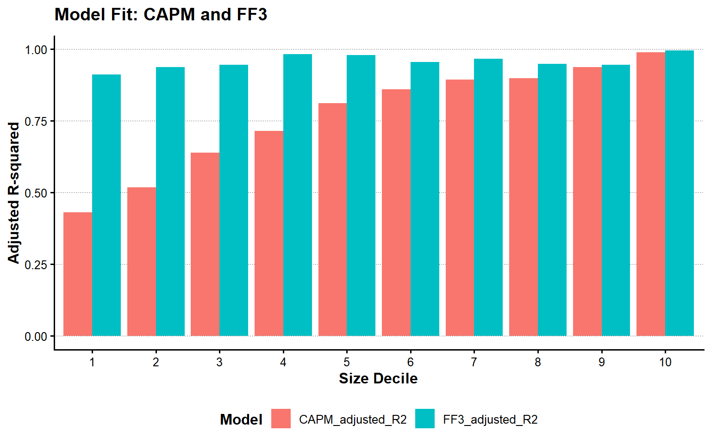
4.8 ファクター・データの保存
第5章以降で使用するファクター・データを、data/derived/factors/fama_french_factors.parquetに保存する。
tbl_factor_output <- tbl_factor |>
select(
month_ID, year, month, month_date,
R_F, R_M, R_Me, SMB, HML,
SL, SN, SH, BL, BN, BH,
market_return_coverage
)
vec_factor_output_path <-
write_derived_parquet_file_LFL(
tbl_factor_output,
file.path(
"factors",
"fama_french_factors.parquet"
)
)
tbl_factor_output_check <-
read_derived_parquet_file_LFL(
file.path(
"factors",
"fama_french_factors.parquet"
)
)
stopifnot(
nrow(tbl_factor_output_check) == nrow(tbl_factor_output),
identical(names(tbl_factor_output_check), names(tbl_factor_output))
)
tbl_factor_output_summary <- tibble(
output_file = vec_factor_output_path,
rows = nrow(tbl_factor_output_check),
columns = ncol(tbl_factor_output_check),
first_month = min(tbl_factor_output_check$month_ID),
last_month = max(tbl_factor_output_check$month_ID)
)
show_table_LFL(tbl_factor_output_summary)
#> # A tibble: 1 × 5
#> output_file
#> <chr>
#> 1 C:/AnalyticFin/Projects/LagrangeFinance/data/derived/factors/fama_french_fact…
#> rows columns first_month last_month
#> <int> <int> <int> <int>
#> 1 60 16 13 724.9 まとめ
本章では、前年度末時価総額を用いて市場ポートフォリオと企業規模ポートフォリオを構築した。また、企業規模と簿価時価比率による独立2×3ソートから6ポートフォリオを作成し、SMBとHMLを計算した。
企業規模10分位ポートフォリオに対してCAPMとFF3モデルを推定し、アルファと調整済み決定係数を比較した。回帰の反復処理にはnest()とpurrr::map()を使用しており、明示的なループは使用していない。
作成したファクター・データは次の場所に保存される。
data/derived/factors/fama_french_factors.parquet第5章では、このファクター・データを利用して、個別企業の資本コスト、共分散構造、平均分散ポートフォリオを分析する。